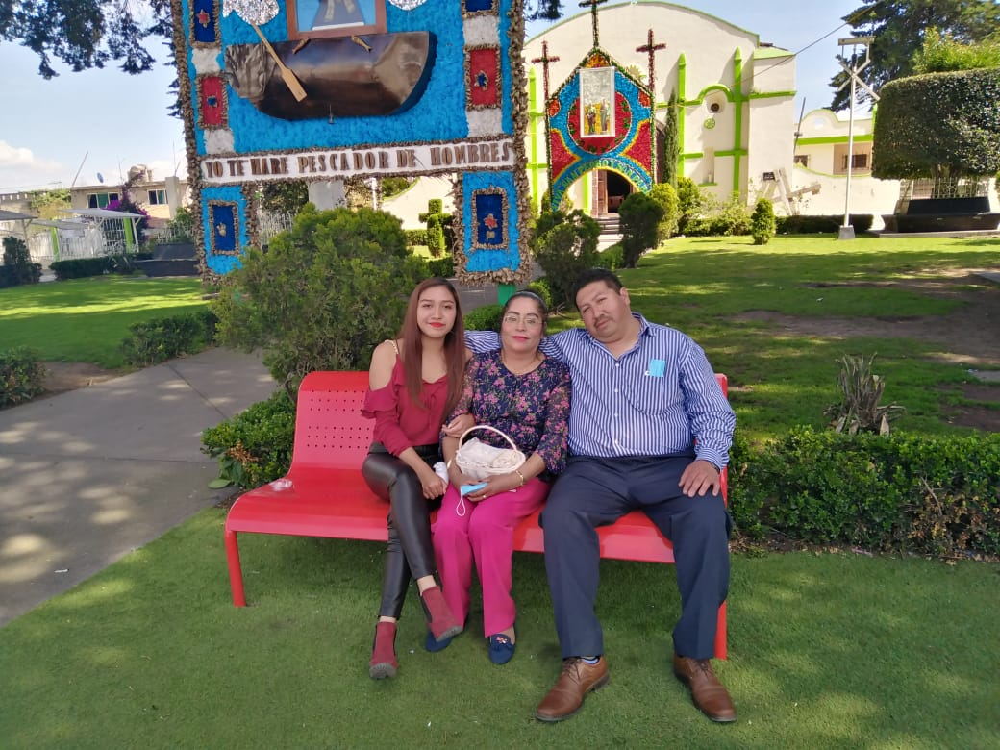
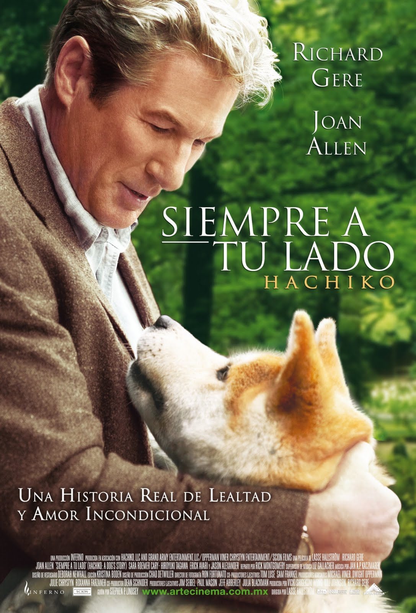
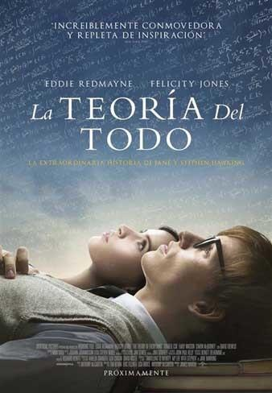

En mi familia hay un negocio de un taller mecánico que mi abuelo comenzó y todos mis tios por parte de mi papá, se han dedicado a sacar adelante
el trabajo de la familia, el trabajo que se realiza en el taller es de hojalateria y pintura de autos y además se pueden arreglar los mismos en caso de ser necesario.
Aunque el trabajo es poco fácil, yo siempre he tenido interes en aprender muchas cosas de lo que hace mi familia con los autos.
Mi papá desde ya hace 10 años ha sido el responsable del funcionamiento del taller y los trabajadores, después de que muriera mi abuelo. Él siempre ha
hecho lo mejor para darnos todo a mi mamá y a mí. Mi mamá siempre me ha apoyado en todos los aspectos necesarios y es por ellos que cada día me esfuerzo el doble.

Uno de los planes que más hacemos en mi familia es ir de viaje, nos encanta hacer un viaje familar a Acapulco cada año y nos encanta subirnos al parachute,
nos encanta las experiencias nuevas y siempre intentamos subir cada año.
Mi Educación
Para mi es muy importante mi educación, yo lo considero mi unico trabajo y mi mayor meta personal, para mi familia también es muy importante
y siempre me han apoyado en todo lo que necesito. Desde que tengo 5 años inicié con la escuela, mis padres de mandaron desde muy chiquita al pre kinder, y desde ahí comenzó mi etapa de estudios, actulamente sigo estudiando y mi meta
es tener un título universitario y si es posible tener poco a poco más logros hasta llegar a un doctorado.
Escuelas
Nombre de escuela
Dirección
Año que ingresé
Año que terminé
Numero de años
Kinder Tiempo Completo Binomastia
Av la zarco la espernaza #125 cuajimalpa
2007
2008
1
Primaria Jose Luis vieyra Gonzales
Coahuila #12 Acoplico
2008
2014
6
Secundaria Dolores Angela Castillo
Av México cuajimalpa
2014
2017
3
Preparatoria Oficial #89 Lobos Negros
Pueta escondida huixquilucan
2017
2020
3
Mi Materia Favorita
Mi materia favorita siempre ha sido las Matemáticas, es una materia muy importante ya que todo hemos tenido problemas con ella, sin embargo, para mí
es muy fácil y siempre por cualquier ruta, se llega a un final. Las matemáticas son exactas y por eso son maravillosas.
Mi fórmula matemática favorita es establecida por la teoría de la relatividad. Esta fórmula establece que la energía de un cuerpo en reposo
(E) se puede calcular como la masa (m) multiplicada por la velocidad de la luz (c = aproximadamente 3 × 108 m/s) al cuadrado. Es decir, todo cuerpo en reposo con masa
tiene un tipo de energía asociada (energía en reposo) ,similarmente cualquier cosa que tenga energía exhibe una masa correspondiente m dada por su energía E dividida
por la velocidad de la luz al cuadrado
Fórmula: E=MC2
Mis Intereses
Mis inetereses generales son muy diferentes, me considero una persona muy dinamica y me gusta siempre cambiar mi rutina, me gusta hacer ejercicio, leer, y salir con mis amigos
aliguas de mis actividades favoritas son:
Aprender muchos deportes, mi favorito es la natación.
Escuchar música de todos los géneros para descubrir nuevos artistas.
Salir con mis amigas y tratar de siempre juntarnos
Leer 1 hora al día mínimo 30 minutos.
Entrenar a mi mascota para que aprenda nuevos juegos.
Mi Música Favorita.
Azul-Zoé.
Radioactive-Imagine Dragons.
Mis 2 canciones favoritas del momento son:
Mis Películas Favoritas
Siempre A Tu Lado
Un perro fiel llamado Hachiko acompaña cada mañana a su amo a la estación de tren y regresa cada tarde para darle la bienvenida después del
trabajo. Sin embargo, esta rutina se ve rota por una desgracia. Pueden ver el tráiler en YouTube.

La Teoría Del Todo
Durante los años sesenta, el estudiante de la Universidad de Cambridge y futuro físico Stephen Hawking se enamora de su compañera Jane Wilde.
A pesar de que le diagnostican una enfermedad devastadora, él y Jane abren nuevos caminos científicos. Pueden ver el tráiler en YouTube.

Mis Amigos
Considero que parte fundamental de una vida es tener una amistad leal y que te acompañe en tus mejores y peores momentos, siempre he tenido muy
buenas amigas y desde el inicio de la preparatoria, han estado conmigo. Mis amigas se llaman Dennisse, Alina, Jaqueline.